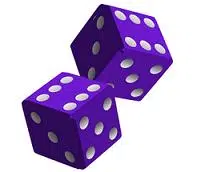
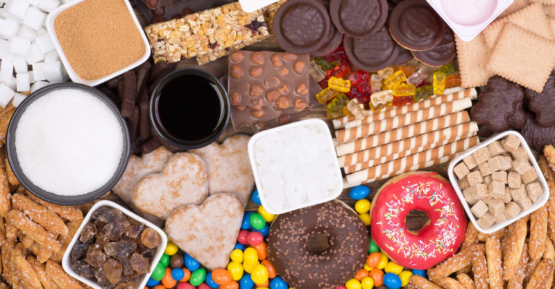

Letra D
Introduccion: En esta pagina encontraremos las palabras más comunes con la letra D
- Dado: En los juegos de azar, objeto generalmente cúbico en cuyas caras aparecen puntos, que representan distintos números, o figuras diferentes. 
- Dulce: Que causa cierta sensación suave y agradable al paladar, como la producida por la miel, el azúcar, etcétera. 
- Danza: Es mover el cuerpo al ritmo de la musica.
- Dibujar: Es hacer imágenes o figuras en una superficie usando lápiz, bolígrafo, pincel u otro instrumento.
- Delfín: Es un mamífero acuático inteligente y ágil que vive en el mar.